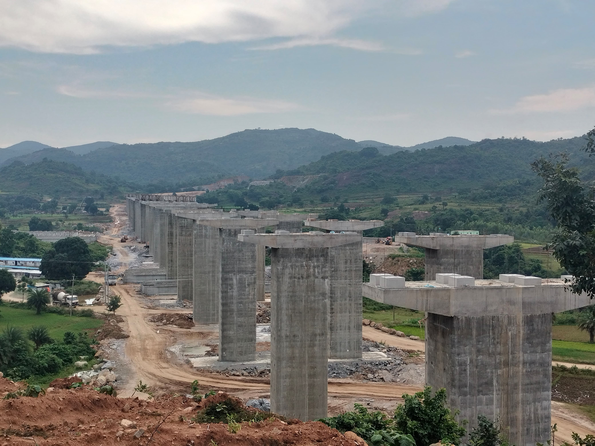
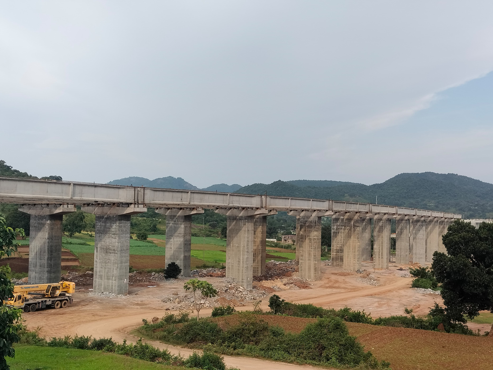
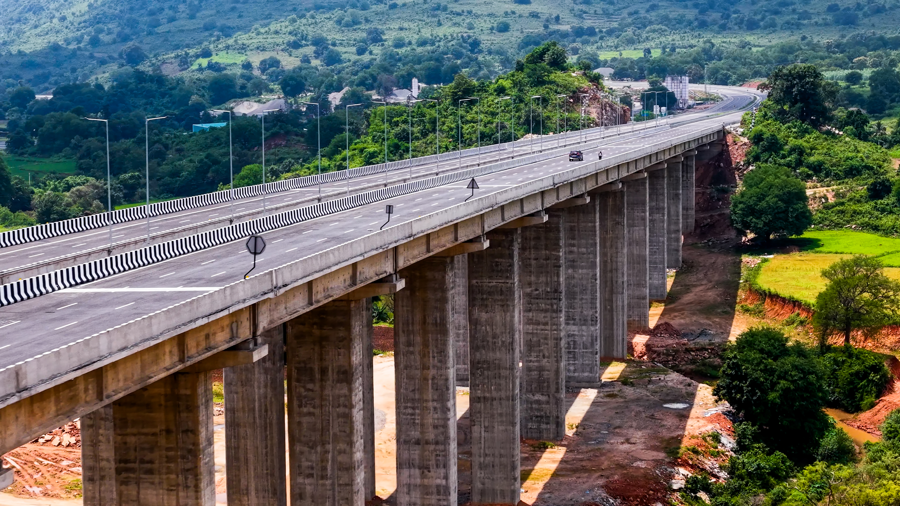
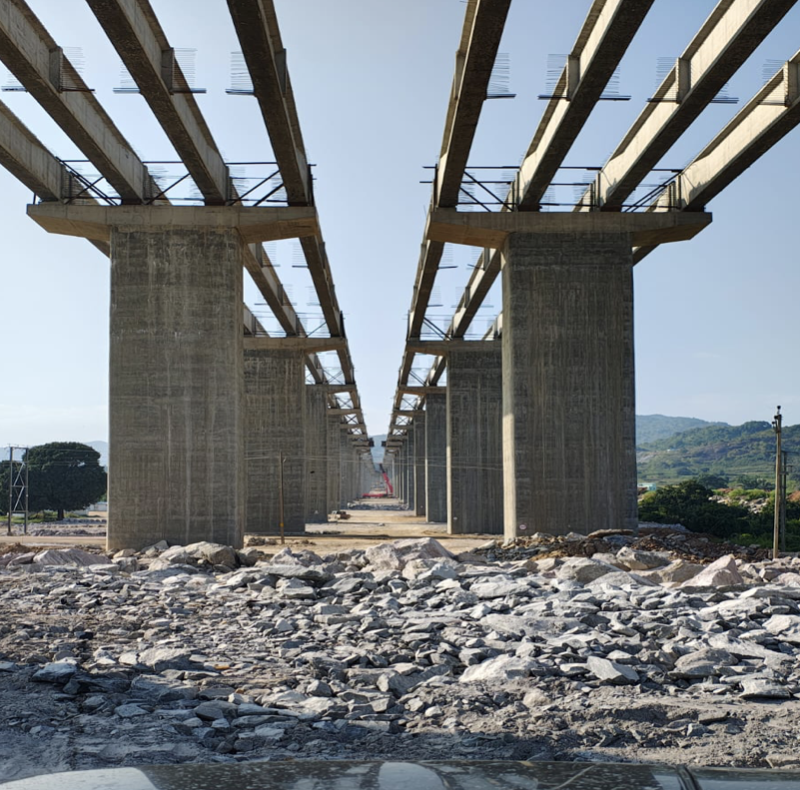
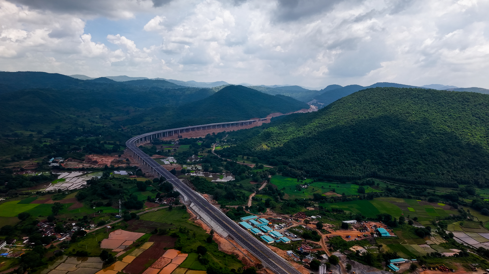
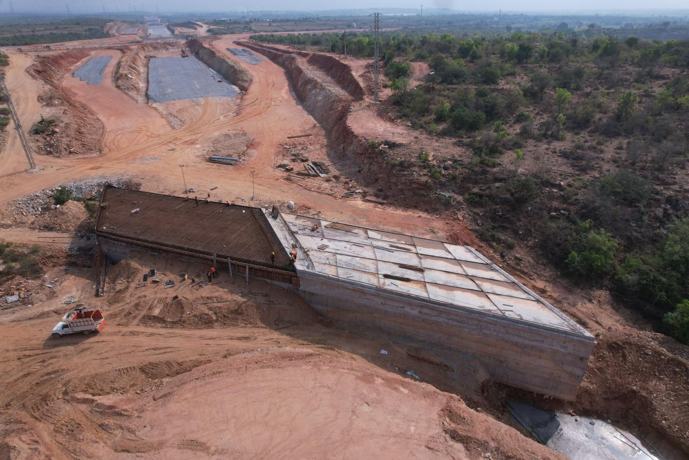
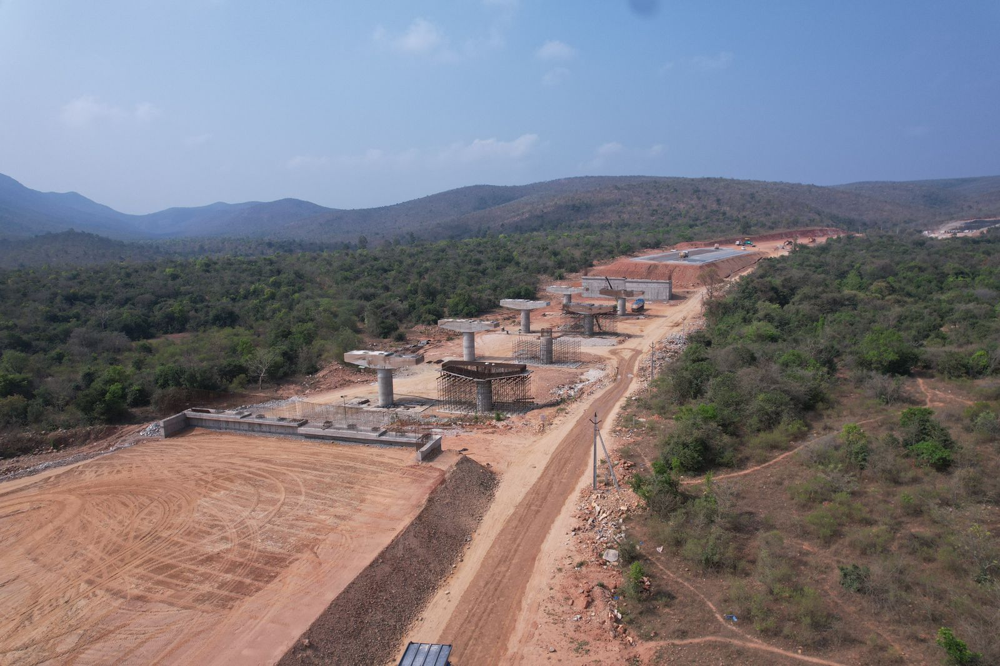

Mana Infrastructure constructs major and minor bridges, elevated viaducts, and structural works seamlessly integrated into highway and railway infrastructure. Our bridge engineering covers pile foundations, pier construction, and superstructure erection.
From the OD-08 viaduct on NH-544G to railway bridges for RVNL projects, we deliver structurally sound, aesthetically designed bridge infrastructure built to last generations.

Complete bridge engineering from foundation to deck with modern construction methods.
Bored cast-in-situ piles and driven pile foundations for bridge substructure.
RCC pier construction, well foundations, and abutment works for all bridge types.
Pre-stressed concrete girder casting, transportation, and erection using launching girders.
Multi-span viaduct construction for highway flyovers and grade-separated junctions.
Structural steel bridge fabrication and erection for railway and road crossings.
Cast-in-place deck slabs, expansion joints, bearings, and wearing course application.
Our bridge and viaduct construction work across India.





Get in touch to learn more about our bridge and viaduct construction capabilities.
Contact Us